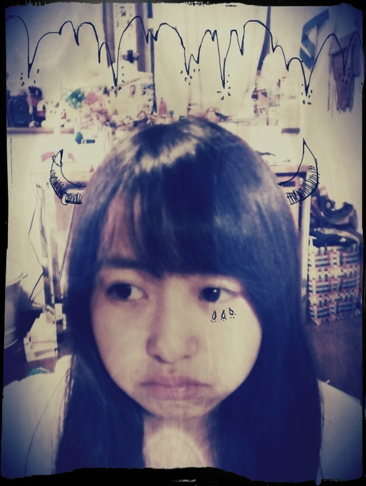

| 2012/01 31 Tue | 64回目*marika |
いつも読んでくださってる方、
初めて読んでくださった方、
コメントしてくださった方、
ありがとうございます^^
まりかよこんばんは。
.......................
・古着着る男性どうおもうー？（＾Ｏ＾☆♪
*****
一緒に買い物行きたいーて思うっ:D
・お願いっ！
万理華のお団子を見せてーっΨ(`∀´#)
*****
じゃあ、お団子第二弾だねっっ♪
ちょいとまってて〜!!
・ゆみ姉のblogに、marikaちゃんから
いい匂いがする～～～
って書いてあったんだけど、
何かボディクリームとか香水付けてる？？？
*****
ボディクリームも香水も持ってるのに
普段は何も付けてないの~笑
なんでかね---＊
・学校の行事の中で、何が一番好き⁇
・年中行事で一番好きなのは何かな？
*****
学校は体育祭!!熱いねxD
文化祭も...いいねっ!!
年中だと、バレンタインと七夕とハロウィン^^*
・僕も古着たまに行きますね～
ハンジローってお店です★
知ってますか？
*****
ハンジローもちろん知ってます~~☆
いいね~x)久しぶりに行こっかな??
・握手会って私服なの？(>_<)☆
・個別は私服を着るんですか？
*****
まだ分からない><
いつか私服で握手したい♡
でも、服のことより......
早く握手したぁいいぃ!!!!!
・ベビたんは鞄はリュック派?サイド(肩掛け)派?
お気に入りの鞄見せてほしいな･･････;D
*****
どっちも!!
リュックもすきだし肩掛けバッグもすき♡
でも最近は黒の革のバッグへビロテしてる。
何にでも合うからね♪
今度載せます*
大きめのバッグがすきなので
革のボストンとか欲しいな...:-D
・ゆみ姉の寝起きの声
想像つかない←
どんな感じなん？
寂しかったら電話してry笑
*****
もうね...
ぼけーほげーもわわわわわ
て感じの声なの。わかる??笑
うん電話するー
っちて!!:D←
はい。調子のった笑xPてへぺろ
・まりりが乃木坂入って
いちばん成長出来たと思うことは？
*****
自分の口からはまだ言えない...
ということは
まだ自分は成長していないと思う。
だから、これから沢山の方と接していく中で
礼儀とか、乃木坂46のパフォーマンスとか...
自分が初めてできた！って思えたら、
自分の口で言えるようになるまで
外見も内面も成長し続けます!!**
・また、手紙書くけど読んでくれるかな？？？
*****
もちろん♡!!
本当にありがとうございます。
あーあーもう、お手紙なんて....
私感動してまた泣いちゃうからね><
・ベビたんの十八番ソングは何？
*****
最近カラオケ行かないな><
友達とかと行く時はやっぱりAKBさん!!
十八番はね.....
え---っとね...えっとね....
あんね、わたしね
歌そんなにじょうずくないの; ;///
・私服もメイクもすごくすきなんですけど、
マスカラはどこのつかってますか?
*****
うきゃー!!うれっしーです♡
ありがとうございます。
マスカラはメイベリンの黄色のです。あいまい!!
・長所が場の空気にあわせられるとこで
短所が空気読めないことってなんじゃい！ｗｗｗ
そこらへん詳しく：(
・「人に合わすのが得意」だけど
「場の空気が読めない」んだっけ？
いったいどっち寄り？ww
*****
あっ。ほんとや。矛盾っっっっ笑
空気読めないのはときどきだもん!!←
場が盛り上がってるときは
私も合わせて
「いえ〜〜〜い」
て!!ねっ??
........
....
ちょ...ちょい!
これ以上まりかをいじめないで〜
・いろんなPV見て、研究かな？！
写真編集はPVから
インスピレーションを受けたものなのかな？！
どんな音楽か気になるから教えて！！
・PVって何のPV見てたんですか？
よかったら教えてください^^
*****
椎名林檎さんやマイナーロックのpv見てたら
突然描きたくなったんですっ!!
・ベビたんは誘惑に負けたことありますか？
*****
お菓子......
お菓子食べて夕飯食べれなかったことがぁ
あります.....!!!!
恐ろしい!!
今日はここまでね＊
.......................
＊＊＊
昨日の乃木どこで
デビュー曲『ぐるぐるカーテン』pv
いかがだったでしょうか??
CooLな感じになってて....
とてもうれしかったです♡
デビュー日が待ち遠しい***
＊＊＊
今日ほんのすこーしだけ
髪切りました。
すこーしです笑
大丈夫よ^^
わたしゃ、たった5cm毛先切ったくらいで
そんな変わりゃしないよ^^へへ
髪さっらさらになったああぁぁ
よかったああぁぁ
「髪染めてますか??茶色いですね:D」
て言われました。
ううん、染めてないよ。
地毛よ。
私ね、けっこう地毛茶色いの^^*
うん。そうなの。
今日も寒かったですね。
今日もお疲れさまりか＊＊
明日も元気に頑張りまりかぁ☆
ではねっ



ベビたん*****bA by marika